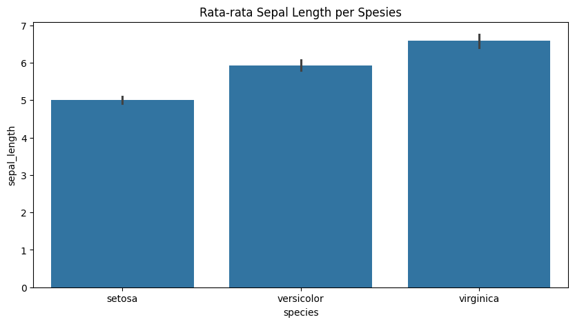
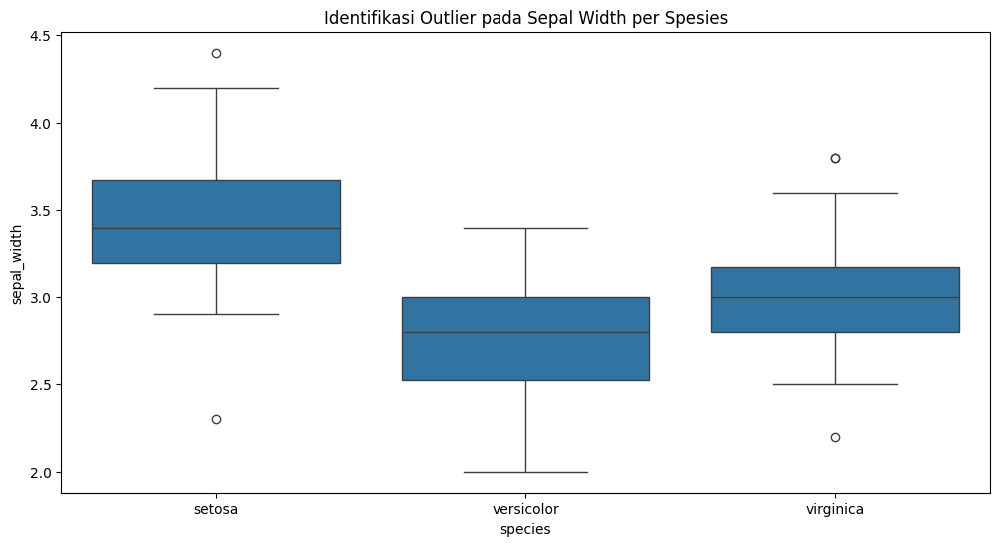

📊 Data Understanding & Statistik Deskriptif (Iris)#
Bagian ini mendokumentasikan karakteristik dataset Iris, kualitas data, serta statistik mendalam untuk setiap kelas (spesies).
1. Identifikasi Fitur & Objek#
Dataset Iris memiliki 150 data dengan ID 1-150. Terdapat 4 fitur numerik ciri objek:
Sepal Length: Panjang Kelopak
Sepal Width: Lebar Kelopak
Petal Length: Panjang Mahkota
Petal Width: Lebar Mahkota
Data terbagi rata ke dalam 3 kelas: Setosa, Versicolor, dan Virginica (masing-masing 50 data).
import pandas as pd
import seaborn as sns
import matplotlib.pyplot as plt
# Memuat dataset
df = sns.load_dataset('iris')
# Pengecekan Missing Values
print("--- Pengecekan Missing Values ---")
print(df.isnull().sum())
print("\nKesimpulan: Tidak ditemukan data yang kosong (Missing Values).")
--- Pengecekan Missing Values ---
sepal_length 0
sepal_width 0
petal_length 0
petal_width 0
species 0
dtype: int64
Kesimpulan: Tidak ditemukan data yang kosong (Missing Values).
2. Statistik Deskriptif Per Spesies#
Dosen meminta perhitungan Mean, Std Deviasi, dan Kuartil yang dikelompokkan (Grouped) per spesies untuk melihat perbedaan karakteristik fisik tiap jenis bunga.
# Menghitung Statistik Deskriptif per Spesies (Mean, Std, Quantile)
stats_per_class = df.groupby('species').describe().T
display(stats_per_class)
# Visualisasi Rata-rata (Mean) per Spesies
plt.figure(figsize=(10, 5))
sns.barplot(x='species', y='sepal_length', data=df)
plt.title('Rata-rata Sepal Length per Spesies')
plt.show()
| species | setosa | versicolor | virginica | |
|---|---|---|---|---|
| sepal_length | count | 50.000000 | 50.000000 | 50.000000 |
| mean | 5.006000 | 5.936000 | 6.588000 | |
| std | 0.352490 | 0.516171 | 0.635880 | |
| min | 4.300000 | 4.900000 | 4.900000 | |
| 25% | 4.800000 | 5.600000 | 6.225000 | |
| 50% | 5.000000 | 5.900000 | 6.500000 | |
| 75% | 5.200000 | 6.300000 | 6.900000 | |
| max | 5.800000 | 7.000000 | 7.900000 | |
| sepal_width | count | 50.000000 | 50.000000 | 50.000000 |
| mean | 3.428000 | 2.770000 | 2.974000 | |
| std | 0.379064 | 0.313798 | 0.322497 | |
| min | 2.300000 | 2.000000 | 2.200000 | |
| 25% | 3.200000 | 2.525000 | 2.800000 | |
| 50% | 3.400000 | 2.800000 | 3.000000 | |
| 75% | 3.675000 | 3.000000 | 3.175000 | |
| max | 4.400000 | 3.400000 | 3.800000 | |
| petal_length | count | 50.000000 | 50.000000 | 50.000000 |
| mean | 1.462000 | 4.260000 | 5.552000 | |
| std | 0.173664 | 0.469911 | 0.551895 | |
| min | 1.000000 | 3.000000 | 4.500000 | |
| 25% | 1.400000 | 4.000000 | 5.100000 | |
| 50% | 1.500000 | 4.350000 | 5.550000 | |
| 75% | 1.575000 | 4.600000 | 5.875000 | |
| max | 1.900000 | 5.100000 | 6.900000 | |
| petal_width | count | 50.000000 | 50.000000 | 50.000000 |
| mean | 0.246000 | 1.326000 | 2.026000 | |
| std | 0.105386 | 0.197753 | 0.274650 | |
| min | 0.100000 | 1.000000 | 1.400000 | |
| 25% | 0.200000 | 1.200000 | 1.800000 | |
| 50% | 0.200000 | 1.300000 | 2.000000 | |
| 75% | 0.300000 | 1.500000 | 2.300000 | |
| max | 0.600000 | 1.800000 | 2.500000 |

3. Identifikasi Outlier (Pencilan)#
Outlier diidentifikasi menggunakan metode Interquartile Range (IQR). Data dianggap outlier jika berada di luar batas bawah (LB) atau batas atas (UB).
Rumus:
\(IQR = Q3 - Q1\)
\(Batas Bawah (LB) = Q1 - (1.5 \times IQR)\)
\(Batas Atas (UB) = Q3 + (1.5 \times IQR)\)
# Visualisasi Outlier dengan Box Plot
plt.figure(figsize=(12, 6))
sns.boxplot(x='species', y='sepal_width', data=df)
plt.title('Identifikasi Outlier pada Sepal Width per Spesies')
plt.show()
# Contoh Perhitungan Outlier Manual (Spesies Setosa pada fitur Sepal Width)
setosa_data = df[df['species'] == 'setosa']['sepal_width']
q1 = setosa_data.quantile(0.25)
q3 = setosa_data.quantile(0.75)
iqr = q3 - q1
lb = q1 - (1.5 * iqr)
ub = q3 + (1.5 * iqr)
print(f"Analisis Outlier Setosa (Sepal Width):")
print(f"Q1: {q1}, Q3: {q3}, IQR: {iqr}")
print(f"Batas Bawah (LB): {lb}")
print(f"Batas Atas (UB): {ub}")

Analisis Outlier Setosa (Sepal Width):
Q1: 3.2, Q3: 3.6750000000000003, IQR: 0.4750000000000001
Batas Bawah (LB): 2.4875
Batas Atas (UB): 4.3875
4. Kesimpulan Akhir#
Missing Values: 0 (Data bersih, tidak butuh imputasi).
Outlier: Ditemukan pencilan pada fitur Sepal Width di spesies Setosa dan Virginica.
Karakteristik: Setiap spesies memiliki rentang nilai fitur yang berbeda (Setosa cenderung paling kecil pada fitur mahkota).
Sumber Data: Data divalidasi dari CSV, JSON, serta Database (PostgreSQL & MySQL).